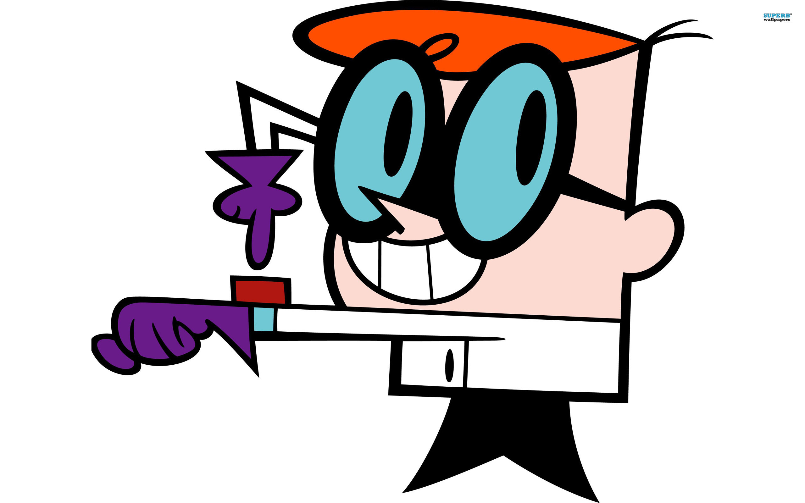

De Jquery UI is de user interface die je momenteel ervaart.
Deze uitbreiding geef je de mogelijkheid een modernere opmaak te voorzien voor allerhande functionaliteiten zoals buttons, checkboxes, radiobuttons, dialogboxes, enz..
In de voorbeelden krijg je al een eerste inzicht in de interface. Probeer zeker ook onderaan de verschillende effectjes uit waarmee bijvoorbeeld een dialoogvenster kan worden opgeroepen of gesloten.
Uiteraard zijn de mogelijkheden veel uitgebreider dan deze basisvoorbeelden.